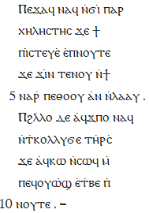

---
layout: default
title: Visualizations
needs_gallery: true
--- 

<article>
<div class="page-header">
<h1>Visualizations</h1>
</div>

<h2>Overview</h2>

<p>ANNIS uses pluggable JAVA modules to visualize data. A configurable
resolver module determines how each annotation layer is visualized, so
that data from different annotation sets can be rendered with either
different or the same visualizations (e.g. two separate syntax trees
displayed one after the other for the same sentence). </p>
<p>To see some examples of data visualized in ANNIS, take a look at our gallery here. The table below provides a list of the currently available visualizers and summarizes some of their features:</p>
<ul>
<li><b>hit view/doc view</b> - Visualizers are set to either display a hit view (e.g. ±n tokens around the search result) or a doc view to visualize the entire document the results come from. Many visualizers can do both, and in some cases two variants are available, in which case the document visualizer has the suffix 'doc'. </li>
<li><b>RTL</b> - Some visualizers also support right-to-left languages such as Arabic or Hebrew, which is shown in the RTL column. </li>
<li><b>multi-seg</b> - Some visualizers can use an alternate segmentation layer or tokenization to represent basic word forms instead of the default tokenization. These visualizations are suitable for corpora that contain dialogue data, subtokenization or conflicting tokenizations of the same data.</li>
<li><b>parallel</b> - Visualizers specifically equipped to deal with parallel corpora may display text from multiple aligned sources within the same module. For other visualizers, parallel corpora can trigger multiple instances of the same visualizer (e.g. syntax trees for each aligned language), but there will be no single visualization incorporating data from multiple sources at the same time.</li>
<li><b>interaction</b> - Visualizers that offer cross-module interactivity can be triggered by other visualizers, such as A/V players that can 'jump' to the
correct aligned time position when the corresponding annotation is clicked on in the grid or kwic view.</li>
</ul>


<table class="table">
<thead><tr><th>visualizer</th><th>description</th><th>hit view</th><th>doc view</th><th>RTL</th><th>multi-seg</th><th>parallel</th><th>interaction</th></tr></thead>
<tbody>
<tr><td>kwic</td><td>classic key-word in context view</td><td>yes</td><td>no</td><td>yes</td><td>yes</td><td>yes</td><td></td></tr>
<tr><td>tree<sup>1</sup></td><td>constituent syntax tree</td><td>yes</td><td>no</td><td>yes</td><td>yes</td><td>no</td><td></td></tr>
<tr><td>grid</td><td>grid for annotation spans</td><td>yes</td><td>no</td><td>yes</td><td>yes</td><td>no</td><td></td></tr>
<tr><td>grid_tree</td><td>grid showing a hierarchy of layered spans</td><td>yes</td><td>no</td><td>yes</td><td>yes</td><td>no</td><td></td></tr>
<tr><td>discourse</td><td>document view underscoring and co-highlighting linked data</td><td>no</td><td>yes</td><td>no</td><td>no</td><td>yes</td><td></td></tr>
<tr><td>arch_dependency<sup>2</sup></td><td>linear dependencies with arches between words</td><td>yes</td><td>no</td><td>no</td><td>yes</td><td>no</td><td></td></tr>
<tr><td>html / htmldoc</td><td>custom annotation-triggered HTML/CSS</td><td>yes</td><td>yes</td><td>yes</td><td>yes</td><td>no</td><td></td></tr>
<tr><td>rst / rstdoc</td><td>rhetorical structure theory tree</td><td>yes</td><td>yes</td><td>no</td><td>no</td><td>no</td><td></td></tr>
<tr><td>pdf / pdfdoc</td><td>aligned pdf page or document</td><td>yes</td><td>yes</td><td> --</td><td> --</td><td> --</td><td>grid</td></tr>
<tr><td>audio / video</td><td>aligned A/V data</td><td>yes</td><td>yes</td><td> --</td><td> --</td><td> --</td><td>grid, kwic</td></tr>
<tr><td>hierarchical_dependency<sup>3</sup></td><td>graphviz-based hierarchical dependencies (vertical)</td><td>yes</td><td>no</td><td>no</td><td>no</td><td>no</td><td></td></tr>
<tr><td>ordered_dependency<sup>3</sup></td><td>graphviz-based linear-hierarchical dependencies (horizontal)</td><td>yes</td><td>no</td><td>no</td><td>no</td><td>no</td><td></td></tr>
<tr><td>graph</td><td>graphviz-based annotation graph (for debugging)</td><td>yes</td><td>no</td><td>no</td><td>yes</td><td>yes</td><td></td></tr>
</tbody>
</table>

<ol>
<li>Coded by <a href="http://www.cl.uzh.ch/people/alumni/marek.html" target="new">Torsten Marek</a>, <a href="http://www.cl.uzh.ch/index.html" target="new">Institute of Computational Linguistics of the University of Zurich</a></li>
<li>Code provided courtesy of <a href="http://gerdes.fr/" target="new">Kim Gerdes</a>, <a href="http://e-ilpga.univ-paris3.fr/" target="new">ILPGA, Paris</a>. Requires SVG capable browser.</li>
<li>Developed in conjunction with <a href="http://www.hf.uio.no/ifikk/personer/vit/daghaug/index.html" target="new">Dag Haug</a>, <a href="http://www.hf.uio.no/ifikk/english/research/projects/proiel/" target="new">PROIEL project, Oslo</a>. Requires <a href="http://www.graphviz.org/" target="new">Graphviz</a>.</li>
</ol>

<h2>Gallery</h2>

<p>Click on the images below to see some applications of the ANNIS visualizer modules</p>
<h3>Syntax trees</h3>
<div class="thumbnail">
        <a class="gallery" href="images/arch_dependency.png" title="<b>Arch dependency visualizer</b>"></a>
		<br/>
		Arch dependency visualizer
</div>
<div class="thumbnail">
        <a class="gallery" href="images/tree.png" title="<b>Tree visualizer</b> for syntactic constituent trees"></a>
		<br/>
		Tree visualizer
</div>


<br class="clearboth">

<div class="thumbnail">
        <a class="gallery" href="images/hebrew_RTL_tree.png" title="A right-to-left <b>tree visualizer</b> showing a syntax tree for Hebrew"></a>
		<br/>
		Right-to-left tree
</div>

<div class="thumbnail">
        <a class="gallery" href="images/dep_hierarchical_dependency_small.GIF" title="<b>Hierarchical dependency</b> visualizer"></a>
		<br/>
		Hierarchical dependency
</div>
<div class="thumbnail">
        <a class="gallery" href="images/dep_ordered_dependency_small.GIF" title="<b>Ordered dependency</b> visualizer"></a>
		<br/>
		Ordered dependency
</div>

<br class="clearboth">


<h3>Token and span annotations</h3>
<div class="thumbnail">
        <a class="gallery" href="images/kwic1.png" title="<b>KWIC</b> shows a classic key-word in context view"></a>
		<br/>
		KWIC
</div>

<div class="thumbnail">
        <a class="gallery" href="images/grid.png" title="A <b>grid</b> showing information structure and chunks"></a>
		<br/>
		Standard grid
</div>
<br class="clearboth">
<div class="thumbnail">
        <a class="gallery" href="images/gridtree.png" title="Topological field annotation using the <b>hierarchical grid-tree</b> visualizer. Layered spans represent nested annotations of the same type"></a>
		<br/>
		Hierarchical grid-tree
</div>

<div class="thumbnail">
        <a class="gallery" href="images/kwic_rtl.png" title="Right-to-left <b>KWIC visualizer</b> with Arabic data"></a>
		<br/>
		Right-to-left KWIC
</div>

<br class="clearboth">


<h3>Discourse annotation</h3>
<div class="thumbnail">
        <a class="gallery" href="images/coref.png" title="Coreference annotation with the <b>discourse visualizer</b>"></a>
		<br/>
		Coreference annotation
</div>
<div class="thumbnail">
        <a class="gallery" href="images/rst.png" title="Rhetorical structure in the <b>RST visualizer</b>"></a>
		<br/>
		Rhetorical Structure Theory<br/> annotation
</div>


<br class="clearboth">

<h3>Parallel corpora</h3>
<div class="thumbnail">
        <a class="gallery" href="images/parallel_kwic.png" title="Parallel <b>KWIC</b>: aligned English-German data"></a>
		<br/>
		Parallel KWIC view
</div>

<div class="thumbnail">
        <a class="gallery" href="images/parallel_discourse.png" title="Parallel <b>discourse</b>: aligned Greek-Coptic sentences"></a>
		<br/>
		Aligned discourse view
</div>

<br class="clearboth"/>


<h3>Aligned multimedia data</h3>
<div class="thumbnail">
        <a class="gallery" href="images/video.png" title="Aligned <b>audio/video</b> streams can be controlled from grid or kwic views"></a>
		<br/>
		Aligned A/V data
</div>

<div class="thumbnail">
        <a class="gallery" href="images/pdf.png" title="Page aligned <b>PDF view</b>, triggered by clicking on grid annotations"></a>
		<br/>
		Page-aligned <br/>PDF embedding
</div>

<br class="clearboth"/>

<h3>Custom HTML visualizations</h3>
<p>These visualizations were created using configurable annotation-triggered HTML and linked CSS files. For more information
on creating your own custom visualizations see the HTML visualization guide.</p>

<div class="thumbnail">
        <a class="gallery" href="images/script.png" title="A Hausa film with code-switching annotation in a movie script/subtitle view"></a>
		<br/>
		Movie script visualization
</div>

<div class="thumbnail">
        <a class="gallery" href="images/manuscript.png" title="A coptic manuscript (diplomatic edition)"></a>
		<br/>
		Coptic diplomatic manuscript
</div>

<br class="clearboth"/>
<div class="thumbnail">
        <a class="gallery" href="images/infstr.png" title="Information structure view: information status coloring and topic/focus brackets"></a>
		<br/>
		Information structure visualization
</div>

<br class="clearboth"/>


<h3>Aggregate visualizations</h3>
<p>A new form of visualization showing quantitative frequency information using aggregation functionality in the ANNIS back-end.</p>
<div class="thumbnail">
        <a class="gallery" href="images/freqs.png" title="Frequencies visualization: histogram"></a>
		<br/>
		Frequencies visualization
</div>

<br class="clearboth"/>

</article>
